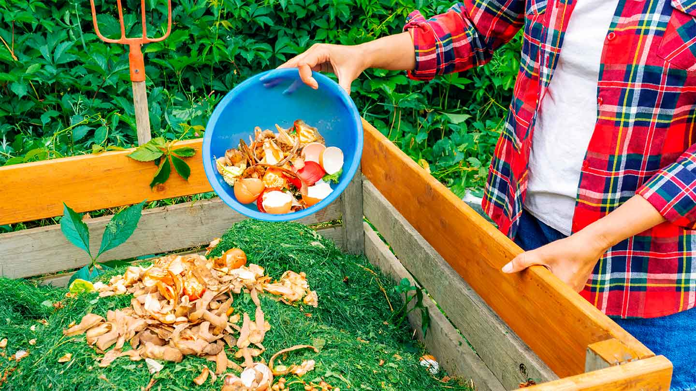
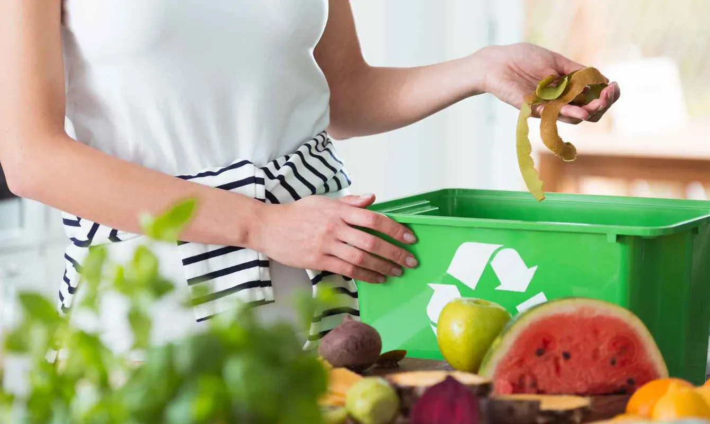

Gestión de residuos naturales
La gestión sostenible de los recursos naturales implica utilizarlos de manera eficiente y responsable para satisfacer las
necesidades presentes sin comprometer las de las generaciones futuras. Esto incluye prácticas como la reforestación,
la gestión pesquera sostenible y la conservación del suelo para prevenir la erosión y la desertificación.

En este ámbito, podemos destacar cuatro tipos de reciclado fundamentales, donde cada uno desempeña un papel crucial en la sostenibilidad ambiental y valorización de residuos: reciclaje químico, reciclaje físico, reciclaje mecánico y reciclaje biológico
